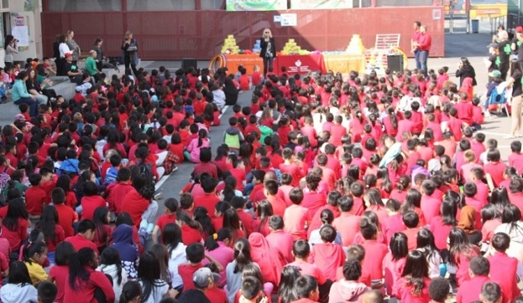
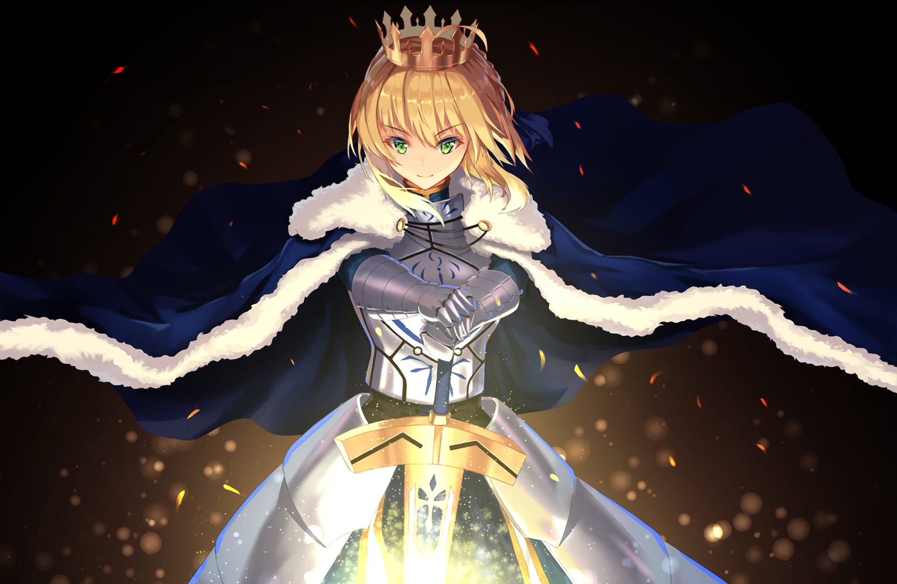

Where am I from?
I was born in Hong Kong in the region of Kowloon. I was then brought to Sichaun and lived there for 2 years then moved back to Hong Kong.
I spent about 5 years in Hong Kong before immigrating to the United States.

Past School
For my elementary school, I attended Lincoln Elementary school with their iconic red t-shirt. I attended Downtown Charter Academy as my middle school, which had to
relocate due to gentrification.
Gaming
Gaming has become very important in my life as it is a way for me to connect with my friends and a way to escape reality because things you can do in a game can't be
recreated in real life.
Cool Games: League of Legends, Genshin Impact, Valorant, Super Smash, a lot more...

Japanese Art
In addition to gaming, animes and mangas are also a part of my life because my passion towards Japanese art stems from the exposure of anime and manga at a young age. Seeing
the art created by mangakas is a huge motivation for me to create japanese style art as a hobby.
Picture is Artoria Pendragon.
Foreign Languages
Fun fact: I know 3 languages.
Mandarin(Elementary level, maybe even middle school level)
Cantonese(Proficient at hearing and understanding)
English(Obviously)
Currently trying to learn Japanese via online resources and Laney courses. So far I can read Hiragana, Katakana, and a little Kanji.